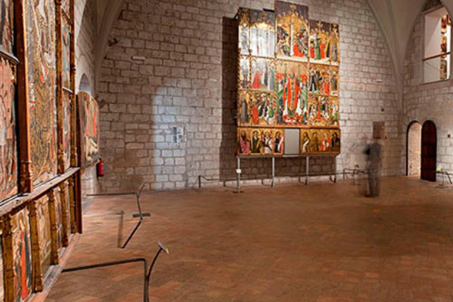

Visita · Girona
Instal·lat a l'antic palau episcopal, aquest notable edifici, modificat i ampliat entre els segles X i XVIII, conté una valuosa col·lecció d'art de la regió de Girona. Les col·leccions de romànic…